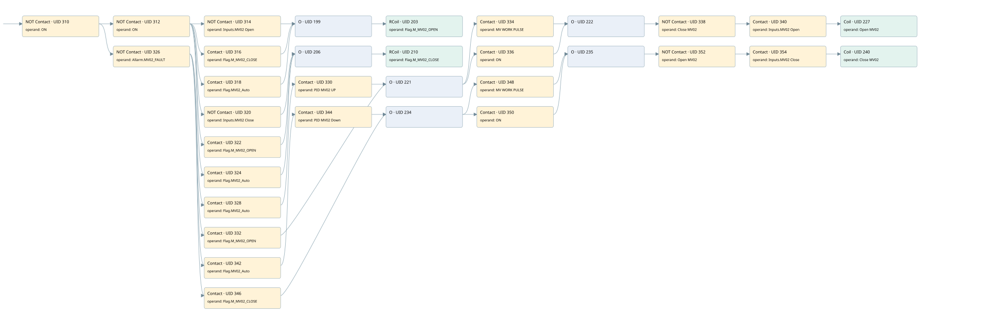

mv02 controlled by psh-01
valve control loop · 검색 색인 순서 3 · 원본 내부 NID 추정 2
백업 PLF 원본의 2914090 바이트 위치에서 복원한 XML. 검색 문서 1704의 객체 키 161022007212000000000000와 연결했다. 이름 해석 27/27개. 남은 RefId는 상수 또는 미해석 참조다.
연결 구조 다시 그리기
원본 Part/PCon/Wire를 이용한 연결도다. TIA 화면의 래더 배치 또는 실행 결과를 재현한 그림은 아니다. 핀 연결은 아래 표와 원본 XML을 기준으로 읽는다. 노드 위에 마우스를 두면 피연산자 이름을 볼 수 있다.

접점·코일·블록과 피연산자
| Part UID | Gate | Negated 핀 | 연결 피연산자 |
|---|---|---|---|
| 310 | Contact | operand | operand = ON |
| 312 | Contact | operand | operand = ON |
| 314 | Contact | operand | operand = Inputs.MV02 Open |
| 316 | Contact | operand = Flag.M_MV02_CLOSE | |
| 318 | Contact | operand = Flag.MV02_Auto | |
| 199 | O | ||
| 203 | RCoil | operand = Flag.M_MV02_OPEN | |
| 320 | Contact | operand | operand = Inputs.MV02 Close |
| 322 | Contact | operand = Flag.M_MV02_OPEN | |
| 324 | Contact | operand = Flag.MV02_Auto | |
| 206 | O | ||
| 210 | RCoil | operand = Flag.M_MV02_CLOSE | |
| 326 | Contact | operand | operand = Allarm.MV02_FAULT |
| 328 | Contact | operand = Flag.MV02_Auto | |
| 330 | Contact | operand = PID MV02 UP | |
| 332 | Contact | operand = Flag.M_MV02_OPEN | |
| 221 | O | ||
| 334 | Contact | operand = MV WORK PULSE | |
| 336 | Contact | operand = ON | |
| 222 | O | ||
| 338 | Contact | operand | operand = Close MV02 |
| 340 | Contact | operand = Inputs.MV02 Open | |
| 227 | Coil | operand = Open MV02 | |
| 342 | Contact | operand = Flag.MV02_Auto | |
| 344 | Contact | operand = PID MV02 Down | |
| 346 | Contact | operand = Flag.M_MV02_CLOSE | |
| 234 | O | ||
| 348 | Contact | operand = MV WORK PULSE | |
| 350 | Contact | operand = ON | |
| 235 | O | ||
| 352 | Contact | operand | operand = Open MV02 |
| 354 | Contact | operand = Inputs.MV02 Close | |
| 240 | Coil | operand = Close MV02 |
접점 경로를 펼친 조건식
Contact·O/A·비교기의 원본 연결을 읽기 쉽게 펼친 보조 해석이다. POWER는 전원 레일 시작을 뜻한다. 호출 블록·에지·타이머의 내부 동작과 다중 쓰기 순서는 이 표로 실행 검증하지 않았다. 미해석 핀과 RefId는 원문 연결표에서 확인한다.
| UID | 동작 | 대상 | 원본 접점 경로 | 내용 |
|---|---|---|---|---|
| 203 | RCoil | Flag.M_MV02_OPEN | ((NOT [ON] AND NOT [Inputs.MV02 Open]) OR (NOT [ON] AND Flag.M_MV02_CLOSE) OR (NOT [ON] AND Flag.MV02_Auto)) | 조건 성립 시 Reset |
| 210 | RCoil | Flag.M_MV02_CLOSE | ((NOT [ON] AND NOT [Inputs.MV02 Close]) OR (NOT [ON] AND Flag.M_MV02_OPEN) OR (NOT [ON] AND Flag.MV02_Auto)) | 조건 성립 시 Reset |
| 227 | Coil | Open MV02 | ((((((((NOT [ON] AND NOT [Allarm.MV02_FAULT]) AND Flag.MV02_Auto) AND PID MV02 UP) OR ((NOT [ON] AND NOT [Allarm.MV02_FAULT]) AND Flag.M_MV02_OPEN)) AND MV WORK PULSE) OR (((((NOT [ON] AND NOT [Allarm.MV02_FAULT]) AND Flag.MV02_Auto) AND PID MV02 UP) OR ((NOT [ON] AND NOT [Allarm.MV02_FAULT]) AND Flag.M_MV02_OPEN)) AND ON)) AND NOT [Close MV02]) AND Inputs.MV02 Open) | 조건에 따른 Coil 기록 |
| 240 | Coil | Close MV02 | ((((((((NOT [ON] AND NOT [Allarm.MV02_FAULT]) AND Flag.MV02_Auto) AND PID MV02 Down) OR ((NOT [ON] AND NOT [Allarm.MV02_FAULT]) AND Flag.M_MV02_CLOSE)) AND MV WORK PULSE) OR (((((NOT [ON] AND NOT [Allarm.MV02_FAULT]) AND Flag.MV02_Auto) AND PID MV02 Down) OR ((NOT [ON] AND NOT [Allarm.MV02_FAULT]) AND Flag.M_MV02_CLOSE)) AND ON)) AND NOT [Open MV02]) AND Inputs.MV02 Close) | 조건에 따른 Coil 기록 |
원본 배선 연결
| Wire UID | 동일 Wire 연결 끝점 |
|---|---|
| 356 | Powerrail {} ↔ Part 310.in |
| 27 | ORef 28 (ON) ↔ Part 310.operand |
| 311 | Part 310.out ↔ Part 312.in ↔ Part 326.in |
| 25 | ORef 26 (ON) ↔ Part 312.operand |
| 313 | Part 312.out ↔ Part 314.in ↔ Part 316.in ↔ Part 318.in ↔ Part 320.in ↔ Part 322.in ↔ Part 324.in |
| 270 | ORef 243 (Inputs.MV02 Open) ↔ Part 314.operand |
| 315 | Part 314.out ↔ Part 199.in1 |
| 271 | ORef 244 (Flag.M_MV02_CLOSE) ↔ Part 316.operand |
| 317 | Part 316.out ↔ Part 199.in2 |
| 272 | ORef 245 (Flag.MV02_Auto) ↔ Part 318.operand |
| 319 | Part 318.out ↔ Part 199.in3 |
| 273 | Part 199.out ↔ Part 203.in |
| 275 | ORef 246 (Flag.M_MV02_OPEN) ↔ Part 203.operand |
| 276 | ORef 247 (Inputs.MV02 Close) ↔ Part 320.operand |
| 321 | Part 320.out ↔ Part 206.in1 |
| 277 | ORef 248 (Flag.M_MV02_OPEN) ↔ Part 322.operand |
| 323 | Part 322.out ↔ Part 206.in2 |
| 278 | ORef 249 (Flag.MV02_Auto) ↔ Part 324.operand |
| 325 | Part 324.out ↔ Part 206.in3 |
| 279 | Part 206.out ↔ Part 210.in |
| 281 | ORef 250 (Flag.M_MV02_CLOSE) ↔ Part 210.operand |
| 283 | ORef 251 (Allarm.MV02_FAULT) ↔ Part 326.operand |
| 327 | Part 326.out ↔ Part 328.in ↔ Part 332.in ↔ Part 342.in ↔ Part 346.in |
| 284 | ORef 252 (Flag.MV02_Auto) ↔ Part 328.operand |
| 329 | Part 328.out ↔ Part 330.in |
| 285 | ORef 253 (PID MV02 UP) ↔ Part 330.operand |
| 331 | Part 330.out ↔ Part 221.in1 |
| 287 | ORef 254 (Flag.M_MV02_OPEN) ↔ Part 332.operand |
| 333 | Part 332.out ↔ Part 221.in2 |
| 288 | Part 221.out ↔ Part 334.in ↔ Part 336.in |
| 289 | ORef 255 (MV WORK PULSE) ↔ Part 334.operand |
| 335 | Part 334.out ↔ Part 222.in1 |
| 290 | ORef 256 (ON) ↔ Part 336.operand |
| 337 | Part 336.out ↔ Part 222.in2 |
| 291 | Part 222.out ↔ Part 338.in |
| 292 | ORef 257 (Close MV02) ↔ Part 338.operand |
| 21 | Part 338.out ↔ Part 340.in |
| 293 | ORef 258 (Inputs.MV02 Open) ↔ Part 340.operand |
| 22 | Part 340.out ↔ Part 227.in |
| 295 | ORef 259 (Open MV02) ↔ Part 227.operand |
| 296 | ORef 260 (Flag.MV02_Auto) ↔ Part 342.operand |
| 343 | Part 342.out ↔ Part 344.in |
| 297 | ORef 261 (PID MV02 Down) ↔ Part 344.operand |
| 345 | Part 344.out ↔ Part 234.in1 |
| 299 | ORef 262 (Flag.M_MV02_CLOSE) ↔ Part 346.operand |
| 347 | Part 346.out ↔ Part 234.in2 |
| 300 | Part 234.out ↔ Part 348.in ↔ Part 350.in |
| 301 | ORef 263 (MV WORK PULSE) ↔ Part 348.operand |
| 349 | Part 348.out ↔ Part 235.in1 |
| 302 | ORef 264 (ON) ↔ Part 350.operand |
| 351 | Part 350.out ↔ Part 235.in2 |
| 303 | Part 235.out ↔ Part 352.in |
| 304 | ORef 265 (Open MV02) ↔ Part 352.operand |
| 23 | Part 352.out ↔ Part 354.in |
| 305 | ORef 266 (Inputs.MV02 Close) ↔ Part 354.operand |
| 24 | Part 354.out ↔ Part 240.in |
| 307 | ORef 267 (Close MV02) ↔ Part 240.operand |
식별자 해석 근거 27개
| ORef UID | RefId | 이름 | IdentXmlPart 파일 | 해석 방법 |
|---|---|---|---|---|
| 28 | 1 | ON | 0617-IdentXmlPart.xml | UID/RID + search-text + NID agreement |
| 26 | 1 | ON | 0617-IdentXmlPart.xml | UID/RID + search-text + NID agreement |
| 243 | 169 | Inputs.MV02 Open | 0619-IdentXmlPart.xml | UID/RID + search-text + NID agreement |
| 244 | 18 | Flag.M_MV02_CLOSE | 0619-IdentXmlPart.xml | UID/RID + search-text + NID agreement |
| 245 | 19 | Flag.MV02_Auto | 0619-IdentXmlPart.xml | UID/RID + search-text + NID agreement |
| 246 | 20 | Flag.M_MV02_OPEN | 0619-IdentXmlPart.xml | UID/RID + search-text + NID agreement |
| 247 | 170 | Inputs.MV02 Close | 0619-IdentXmlPart.xml | UID/RID + search-text + NID agreement |
| 248 | 20 | Flag.M_MV02_OPEN | 0619-IdentXmlPart.xml | UID/RID + search-text + NID agreement |
| 249 | 19 | Flag.MV02_Auto | 0619-IdentXmlPart.xml | UID/RID + search-text + NID agreement |
| 250 | 18 | Flag.M_MV02_CLOSE | 0619-IdentXmlPart.xml | UID/RID + search-text + NID agreement |
| 251 | 22 | Allarm.MV02_FAULT | 0619-IdentXmlPart.xml | UID/RID + search-text + NID agreement |
| 252 | 19 | Flag.MV02_Auto | 0619-IdentXmlPart.xml | UID/RID + search-text + NID agreement |
| 253 | 23 | PID MV02 UP | 0617-IdentXmlPart.xml | UID/RID + search-text + NID agreement |
| 254 | 20 | Flag.M_MV02_OPEN | 0619-IdentXmlPart.xml | UID/RID + search-text + NID agreement |
| 255 | 13 | MV WORK PULSE | 0617-IdentXmlPart.xml | UID/RID + search-text + NID agreement |
| 256 | 1 | ON | 0617-IdentXmlPart.xml | UID/RID + search-text + NID agreement |
| 257 | 24 | Close MV02 | 0617-IdentXmlPart.xml | UID/RID + search-text + NID agreement |
| 258 | 169 | Inputs.MV02 Open | 0619-IdentXmlPart.xml | UID/RID + search-text + NID agreement |
| 259 | 25 | Open MV02 | 0617-IdentXmlPart.xml | UID/RID + search-text + NID agreement |
| 260 | 19 | Flag.MV02_Auto | 0619-IdentXmlPart.xml | UID/RID + search-text + NID agreement |
| 261 | 26 | PID MV02 Down | 0617-IdentXmlPart.xml | UID/RID + search-text + NID agreement |
| 262 | 18 | Flag.M_MV02_CLOSE | 0619-IdentXmlPart.xml | UID/RID + search-text + NID agreement |
| 263 | 13 | MV WORK PULSE | 0617-IdentXmlPart.xml | UID/RID + search-text + NID agreement |
| 264 | 1 | ON | 0617-IdentXmlPart.xml | UID/RID + search-text + NID agreement |
| 265 | 25 | Open MV02 | 0617-IdentXmlPart.xml | UID/RID + search-text + NID agreement |
| 266 | 170 | Inputs.MV02 Close | 0619-IdentXmlPart.xml | UID/RID + search-text + NID agreement |
| 267 | 24 | Close MV02 | 0617-IdentXmlPart.xml | UID/RID + search-text + NID agreement |
검색 코드 보조 자료
참조 명칭을 찾기 위한 자료이며 실행 순서나 AND/OR 관계는 위 연결표로 확인한다.
"on" "on" "inputs"."mv02 open" "flag".m_mv02_open "allarm".mv02_fault "flag".mv02_auto "pid mv02 up" "mv work pulse" "close mv02" "inputs"."mv02 open" "open mv02" "flag".m_mv02_open "flag".mv02_auto "pid mv02 down" "mv work pulse" "open mv02" "inputs"."mv02 close" "close mv02" "on" "flag".m_mv02_close "on" "flag".m_mv02_close "flag".mv02_auto "inputs"."mv02 close" "flag".m_mv02_close "flag".m_mv02_open "flag".mv02_auto